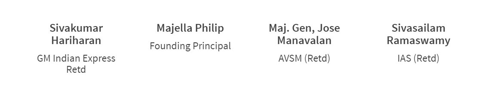
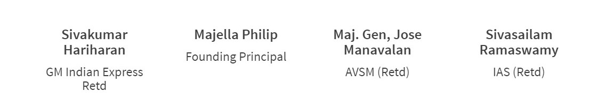

Join our team of highly educated and experienced faculty and staff! View positions that are currently available and sign up for our job notifications.
The Babaji movement, believes that tomorrow’s leaders need an excellent foundation, cultivated in an environment that is both caring and challenging, where they can thrive and develop. Teachers at our school promote rigorous learning by actively engaging students and challenging them to reach their full potential in different spheres. Babaji Vidhyashram has four different operating divisions: Early Learning Centre (preschool through Upper Kinder Garten), Primary school (grades one through Five), Middle school (grades Six through Eight) and High School (Comprises grades Nine through Twelve) headed by the principal and academic coordinators at each level. The four divisions of Babaji Vidhyashram operate as distinct learning communities with all the benefits and facilities of a large school. Babaji Vidhyashram is located in one of Chennai's most youthful, vibrant, dynamic, and multi-cultural Corridors. Chennai, is known as a regional leader in educational quality, innovation, and investment. Babaji plays an important role in OMR's educational portfolio and also has the opportunity to learn from and partner with other educational institutions—both K-12 and higher ed— all of which operate in close proximity to one another. Babaji Vidhyashram is located in a beautiful residential neighbourhood and teachers have any number of residential apartments & houses available both on rent as well as to own. The school has available dedicated help to assist teachers in moving into the neighbourhood.
Teaching salaries are competitive and determined by the School Managing Committee based upon qualifications and prior experience. Access to a teacher's lounge with broadband and refreshments throughout the day Qualifying teachers enjoying the highest pay (in excess of 6th Pay Commission) amongst all neighbourhood schools. PF & ESI payments are made a part of the package with transparent workings A competitive tuition fee remission program for children of teachers Free transport to & from school Regular cutting edge training programs Access to the latest in teaching technology and technique Open environment with free hand try out good ideas and abundant opportunities to collaborate with national & international schools Academic Program Babaji is committed to academic excellence as well as to the emotional, physical, and social well-being of all students. The school believes in the value of a comprehensive liberal arts & technology driven education and the curriculum is based upon CBSE syllabus. The school’s commitment to providing an international perspective is reflected in the curriculum, extensive service opportunities, and extra-curricular activities. We welcome students with different learning styles, interests, and personal strengths. We do this to serve our community and because we believe this level of diversity makes us stronger and prepares our students for the world they will encounter as adults. Babaji Vidhyashram maintains small classes to benefit student learning; the maximum number in the Early Childhood Center (preschool and kindergarten) is 25 students, and in Grade 1 through grade 12, it is 30 students. Babaji teachers have a tradition of being at the forefront of best practices in student learning. This focus on learning also recognizes the critical importance of interdependence and team collaboration. In addition, the school continually challenges itself to strengthen the delivery of its strong curriculum, investing in professional development for teachers, evaluating innovations from other educational institutions, and adopting best practices. All of the learning initiatives are underpinned by a collective desire for high and consistent standards and for greater articulation of curricular goals across and between classes and divisions.
Babaji Vidhyashram has exceptional faculty with experience teaching in many parts of the country and outside. The dedicated and inspiring faculty at Babaji Vidhyashram is one of the school’s major strengths. More than 75% have masters or doctorate degrees. The retention rate of the faculty at Babaji Vidhyashram is 90%. Babaji Movement, encourages and supports professional development that enhances lifelong learning for all faculty and staff. Professional development is designed to support five targets: school goals; division, grade level and department goals; the curriculum development cycle; off-cycle needs; and the expressed needs of faculty and staff. Professional development for faculty members is extensive, ongoing, and takes place inside and outside Chennai currently, and proposed to happen around the world.


 
